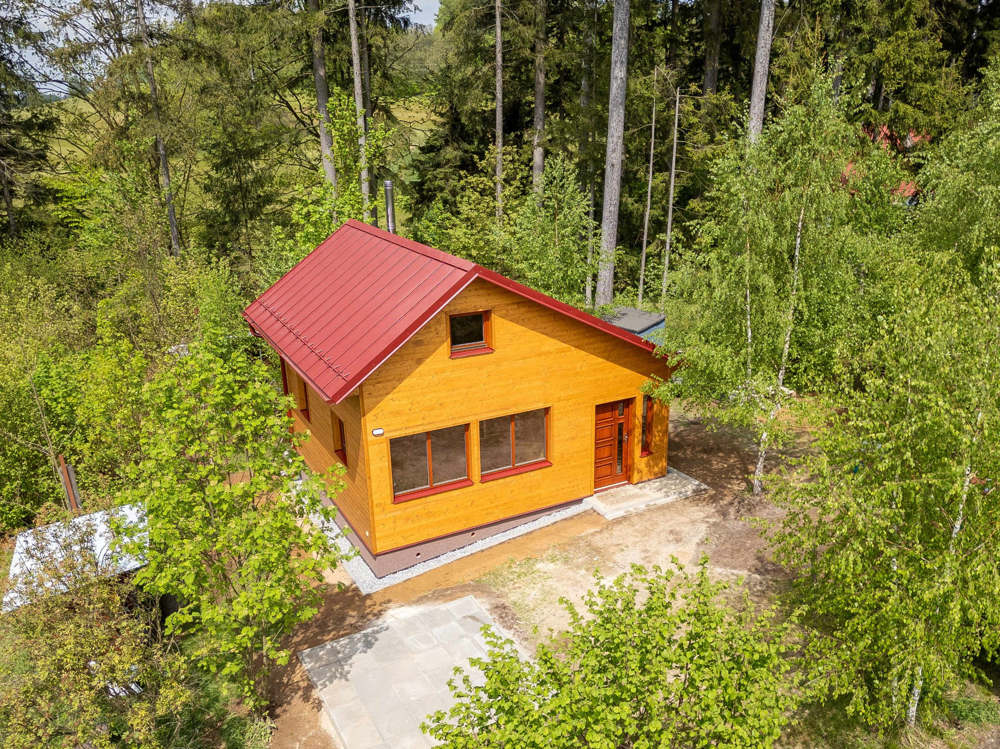
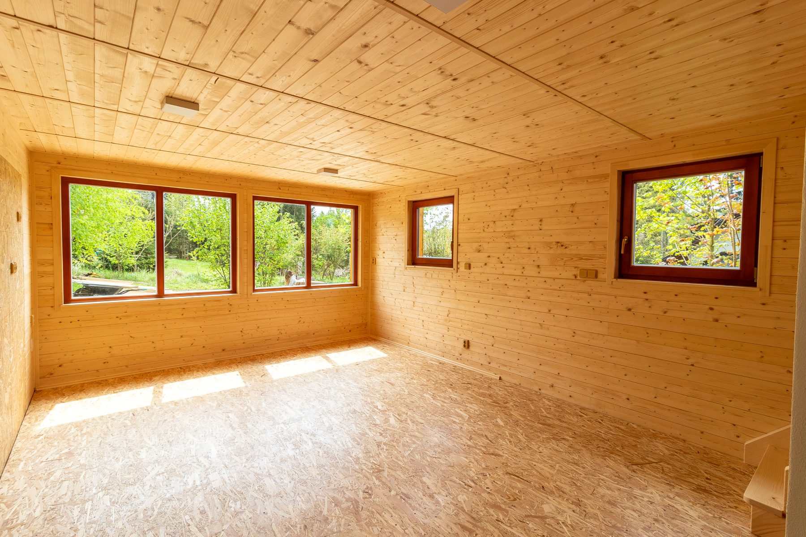
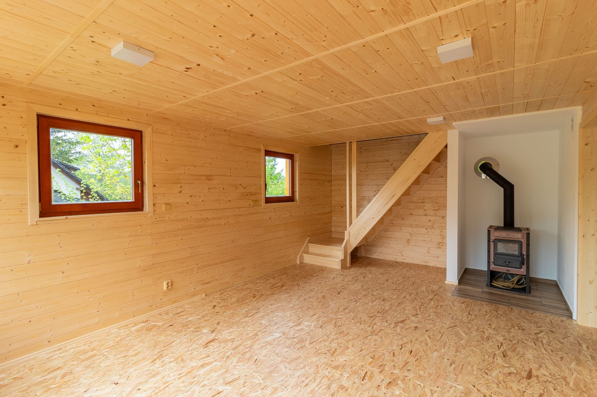
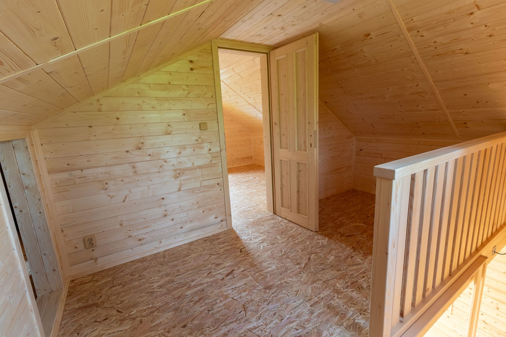
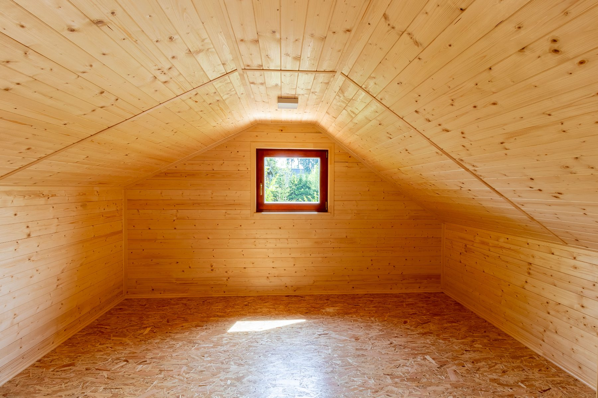
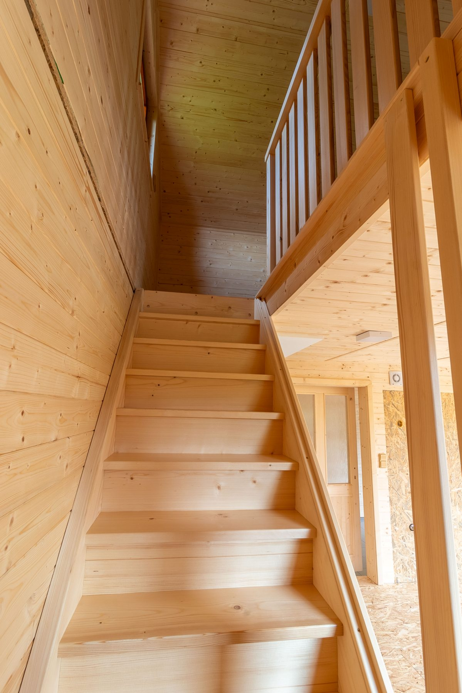
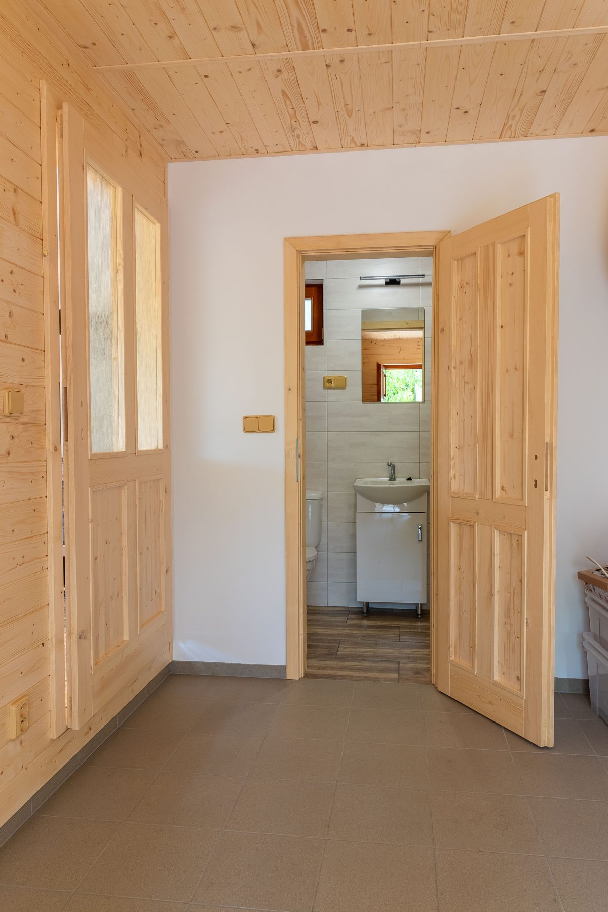

Vybraná reference
Tesařství Jihlava
Chata ve Větrném Jeníkově
Fotografická reference vedená od celku stavby přes interiér až k detailu.
- Celek stavby v krajině
- Interiér a rytmus prostoru
- Materiálový detail
Cesta začíná celkem
Stavba nejdřív musí fungovat jako klidný celek.
První dva záběry čtou proporce, střechu a zasazení do místa. Text jen doplňuje to, co je na fotografiích patrné okamžitě.


První vrstva reference
Nejde o výčet položek. Stačí dva širší záběry a je jasné, jak realizace sedí v krajině i v měřítku stavby.
Interiér a rytmus prostoru
Střed stránky zpomalí a vede pozornost dovnitř.
V této části se ukazuje, jak se prostor skládá z proporcí, světla a materiálu bez potřeby těžkého komentáře.





Materiál a detail
Zblízka je vidět, proč celek funguje.
Druhá polovina stránky ukáže napojení, zakončení a práci s povrchem bez zbytečného komentáře navíc.
- čisté napojení prvků
- materiálový rytmus
- detail, který drží výraz stavby





Máte podobný záměr?
Navážeme na stavbu, která má fungovat stejně klidně jako na fotografiích.
Pokud řešíte chatu, střechu nebo dřevěnou konstrukci, ozvěte se. Navážeme na charakter stavby a doporučíme další krok.
info@tesarstvi-jihlava.cz +420 603 176 612 Telecska 2746/96, 586 01 Jihlava- Vlastník
- Stepan Kvasnicka
- IČO
- 01992201
- DIČ
- CZ9408064710
- Adresa
- Telecska 2746/96, 586 01 Jihlava